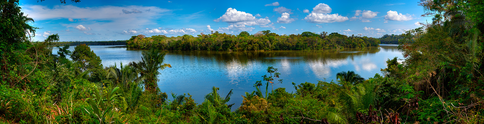

Publications
Peer reviewed articles
- Tang J, Poirier AC, Duytschaever G, Moreira LAA, Nevo O & Melin AD (2021). Assessing urinary odours across the oestrous cycle in a mouse model using portable and benchtop gas chromatography-mass spectrometry. Royal Society Open Science, 8(9), 210172. DOI: 10.1098/rsos.210172
- Poirier AC, Waterhouse JS, Dunn JC & Smith AC (2021). Scent marks signal species, sex and reproductive status in tamarins (Saguinus spp., Neotropical primates). Chemical Senses, March, 1-10. DOI: 10.1093/chemse/bjab008
- Poirier AC, Waterhouse JS, Dunn JC & Smith AC (2021). Temporal stability of primate scent samples. SN Applied Sciences, 3(4), 456. DOI: 10.1007/s42452-021-04455-1
- Poirier AC, Waterhouse, JS, Watsa M, Erkenswick GA, Moreira LAA, Tang J, Dunn JC, Melin AD & Smith AC (2021). On the trail of primate scent signals: field analysis of tamarin scent-gland semiochemistry by portable gas chromatography-mass spectrometry. American Journal of Primatology, 83(3), 1-12. DOI: 10.1002/ajp.23236
- Souza-Alves JP, Mouthe I, Hilario RR, ..., Poirier AC, ... & Barnett AA (2019). Terrestrial behavior in titi monkeys (Callicebus, Cheracebus and Plecturocebus): Potential correlates, patterns and differences between genera. International Journal of Primatology, 1-20. DOI: 10.1007/s10764-019-00105-x
- Watsa M, Erkenswick G, Halloran D, Kane EK, Poirier A, Klonoski K, ... & Zuniga A (2015). A Field Protocol for the Capture and Release of Callitrichids. Neotropical Primates, 22(2), 59–68.
Manuscripts in review
- Poirier AC, Dunn JC, Watsa M, Erkenswick GA, Melin AD, Waterhouse JS & Smith AC. Captivity and olfactory communication: comparative analysis of scents from wild and captive tamarins. Journal of Zoo and Aquarium Research.
Conference presentations
- Poirier AC, Luzardo AC & Melin AD. Fruit odor signals and animal-plant coevolution’ (2022). International Primatological Society congress, Quito, Ecuador. Oral presentation (virtual).
- Poirier AC, Dunn JC, Watsa M, Erkenswick GA, Melin AD, Waterhouse JS & Smith AC. Captivity and communication: Comparative analysis of scents from wild and captive tamarins’ (2021). 15th Meeting of the Chemical Signals in Vertebrates group, Dijon, France. Oral presentation (virtual).
- Poirier AC, Waterhouse, JS, Dunn JC & Smith AC. Sniffing out primate scent communication’ (2018). 9th European Conference on Behavioural Biology, Liverpool, UK. Poster presentation.
- Poirier AC, Waterhouse, JS, Watsa M, Erkenswick GA, Moreira LAA, Tang J, Dunn JC, Melin AC & Smith AC. Sniffing out primate scent signals: the first field analysis of callitrichine scents by portable GC-MS’ (2018). Primate Society of Great Britain Spring meeting, Portsmouth, UK. Oral presentation.
- Poirier AC, Waterhouse, JS, Watsa M, Erkenswick GA, Moreira LAA, Tang J, Dunn JC, Melin AC & Smith AC. First field analysis of primate scents using a portable GCMS’ (2017). 14th Meeting of the Chemical Signals in Vertebrates group, Cardiff, UK. Oral presentation.
- Poirier AC, Waterhouse, JS, Dunn JC & Smith AC. Making sense of scents: deciphering primate olfactory communication (2017). Anglia Ruskin Faculty of Science & Technology research conference, Chelmsford, UK. Poster presentation.